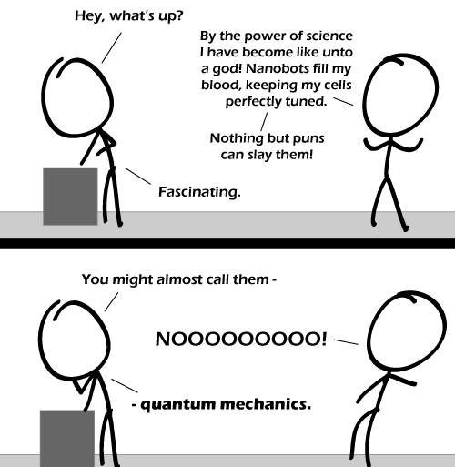

Comic JK 546
When I Feel Like It
⇤
<
?
>
⇥

⇤
<
?
>
⇥
Forum
.
RSS
.
Digg
.
Facebook
.
Reddit
.
Twitter
.
Stumbleupon
� You�re killing me with your puns. That is the most debilitating weakness ever. Not even the Wicked Witch of the West (she�s water-soluble) can be defeated so easily. Puns are lazy writing. > No, they're not. Puns are an effective stylistic device which can greatly enhance a text or comic. And to actually create original puns requires not only an understanding of both the language you are using and the more or less specific field they are based on (physics, in this case). It also takes some effort to use them effectively and efficiently. You are just disappointed because most recent strips of a webcomic you like have been based on puns which you don�t enjoy. By the way, you are the one wasting your time reading webcomics instead of doing something useful. So who are you to call anything someone else does �lazy�? >>Get back to work, you two! >>>Three! PUNS KICK ASS STAND UP FOR PUNS >no way puns suck >>PUNS ARE AWESOME >>>your mom was awesome in bed >>>>And this is why I love the internet, every conversation ends with a your mama joke. >>>>>Your moma ends with the internet >>>>>>Yo's is so fat she don't end! [/slightly racist comedy accent] .-.----. /o- ) | o || __ |' + -|- <- (Poacher) = '- ||| ||| / ------------------------ _-_----_ /x- ) | || |' (Dead Elephant) '- |||--||| “Got it! Say, why do they call it a hack saw? It doesn’t hack; hacking is what I was doing with the knife. This is a saw. I don’t get it.”